Proyectos en los que he trabajado de forma autodidacta en distintos lenguajes y entornos.
Algunos se han perdido por el cierre de hostings gratuitos, pero aquí recojo los más significativos
junto con capturas, vídeos y reflexiones del proceso.
01
C# · UnityDAM
Alegoría — Proyecto fin de ciclo DAM
Videojuego desarrollado en C# y Unity como proyecto final de Desarrollo de Aplicaciones Multiplataforma.
La idea era crear un juego de plataformas con sistema de guardado de partida, ranking exportable en varios
formatos (serializado y JSON) y varios niveles. El título refleja su temática: una metáfora visual sobre
los pensamientos intrusivos y la ansiedad, con tonos oscuros de morado y negro.
El proyecto nació de la necesidad de dominar el guardado de datos en C#, algo que me había fallado en un examen.
No paré hasta entenderlo al 100% y poder serializarlo correctamente. Aprendí C# de forma autodidacta, por lo que
el proyecto también me sirvió para conocer más a fondo las limitaciones y posibilidades del lenguaje.
Parte jugable
El personaje se mueve con WASD, recoge potenciadores (invencibilidad, velocidad, eliminación de enemigos),
evita enemigos que reducen puntuación y vida, y llega a una meta que carga la siguiente escena transfiriendo datos.
Parte visual
El mayor reto fue el diseño, mi punto más débil. Conté con el asesoramiento de José Antonio Villar.
Quería sprites en punto de cruz (uno de mis hobbies) pero el tiempo no alcanzó para todos.
El menú evolucionó de simples botones a un menú interactivo con vídeo en bucle de fondo.
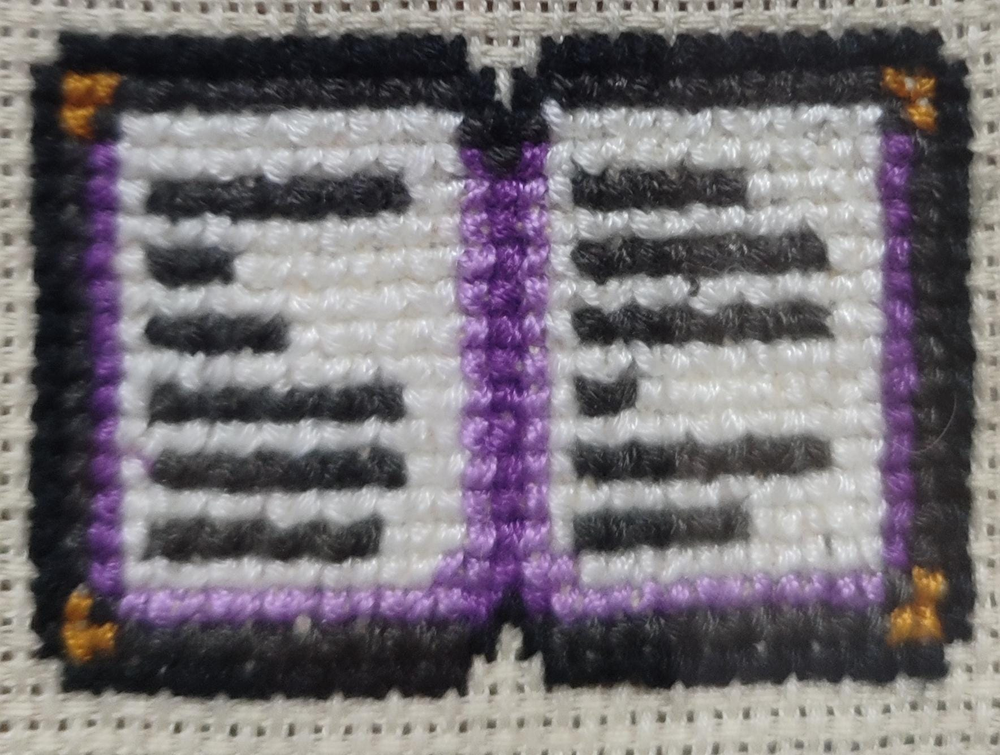
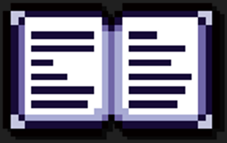
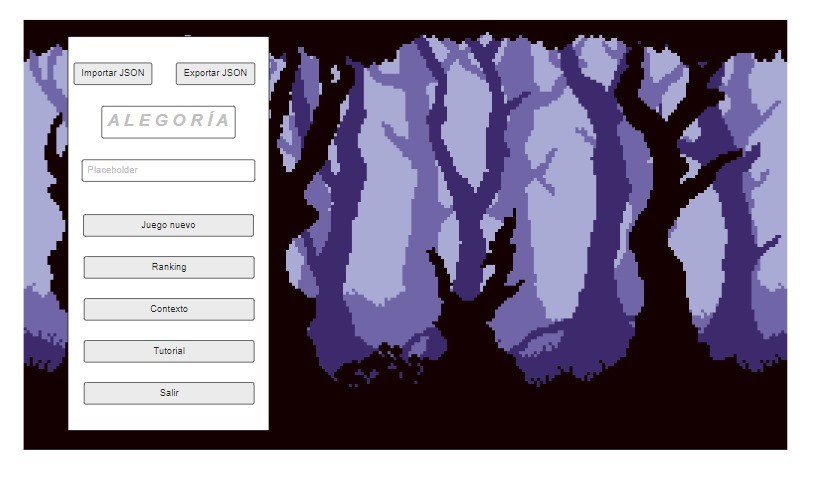
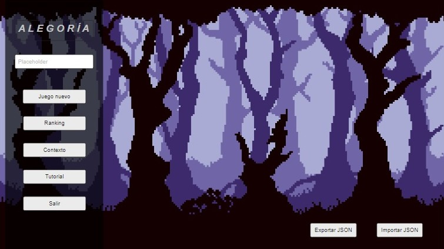
Presentación final
02
PHP · SQL · HTML/CSSPerdido
Kettei — Proyecto fin de ciclo DAW
Juego web de toma de decisiones para gestionar un país. Kettei (決定) significa "decisión" en japonés.
El sistema presentaba situaciones al usuario, quien debía elegir entre varias opciones. Cada decisión alteraba
uno de tres "poderes" representados por barras CSS. Si alguno superaba 100 o bajaba de 0, el jugador perdía.
Incluía inicio de sesión con registro de usuarios, guardado de progreso, historial de partidas y decisiones
en base de datos. Desgraciadamente se perdió al cerrar el hosting gratuito donde estaba alojado.
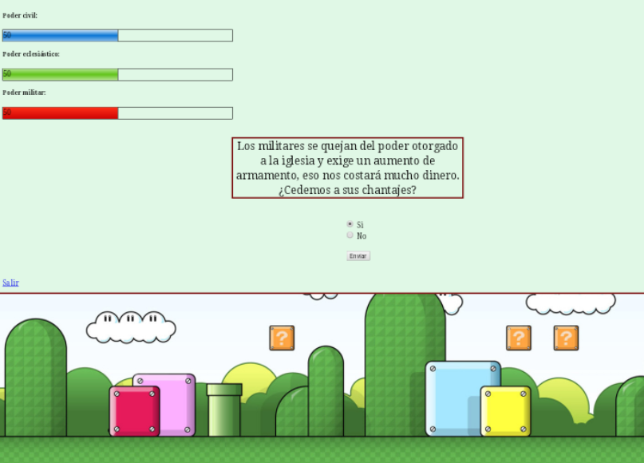
03
PHP · SQL · BLOBPerdido
Proyecto Posts — Red social minimalista
Red social personal cuyo objetivo era entender la lógica de plataformas como Twitter o Threads.
Los usuarios podían crear, modificar y eliminar posts e imágenes de perfil (almacenadas como campos BLOB en la base de datos).
Cada usuario tenía un identificador único para seguir a amigos y ver solo sus publicaciones.
Usé a mis conocidos como testers y se detectaron errores reales (como la longitud del texto) que se corrigieron
relacionando dinámicamente la altura del cuadro del post con el número de caracteres.
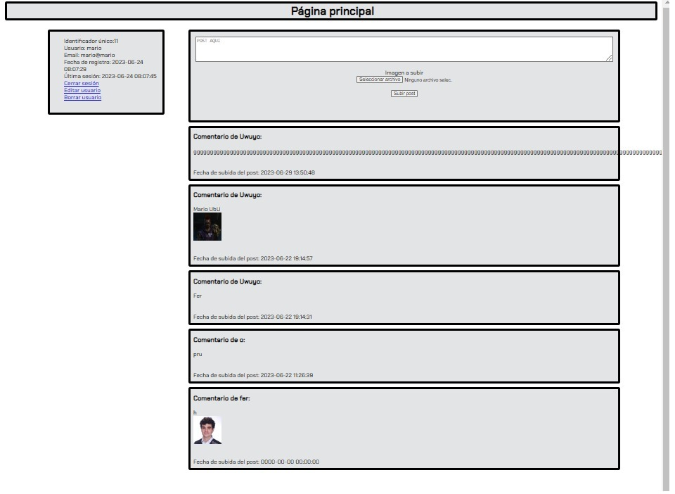
04
Java · UnityDAM
Desarrollo Multiplataforma — Android y Unity
El módulo comenzó con desarrollo Android en Java. Creé una app de seguimiento de lecturas, sencilla
por diseño: título, autor y estado de lectura. Las apps existentes para esto me parecían innecesariamente complejas.
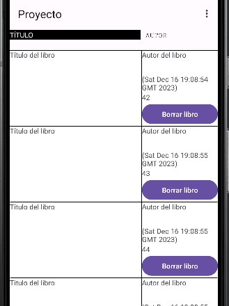
La segunda parte fue en Unity: un juego de plataformas donde recoger objetos o saltar plataformas (que desaparecen
progresivamente) para llegar a la meta. La mayor dificultad fue implementar una gravedad exponencial (que desacelere
el salto progresivamente) en lugar de la lineal por defecto. Sirvió de práctica para Alegoría.
05
C# · Visual StudioDAM
Acceso a Datos
Módulo centrado en las distintas formas de acceder, interpretar y exportar datos externos, con control de errores.
La aplicación principal gestiona ciudades con su población y capital. El módulo me pareció especialmente útil
por su aplicabilidad práctica en cualquier negocio.
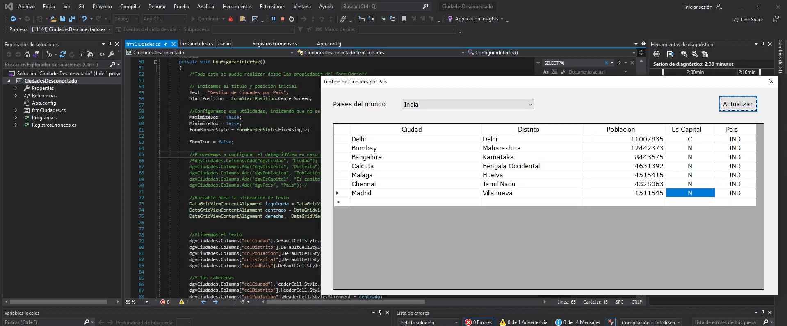
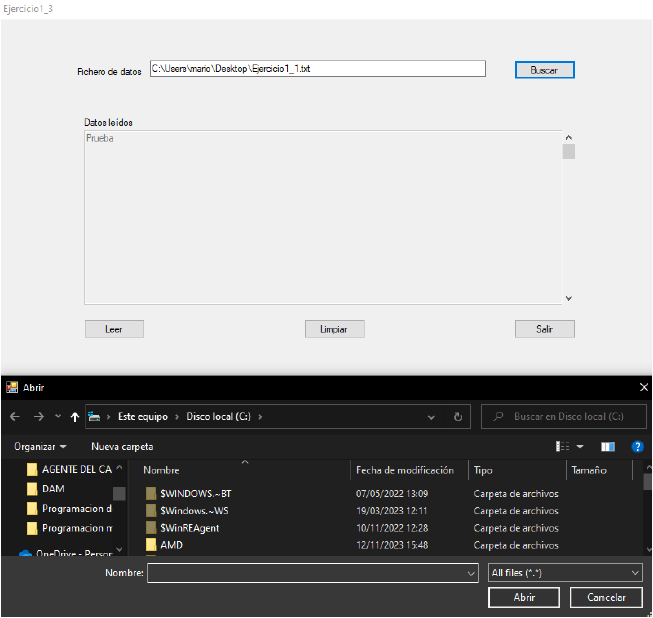
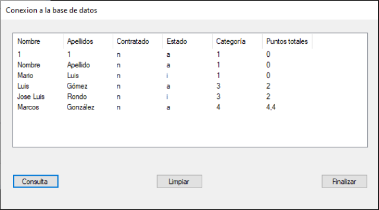
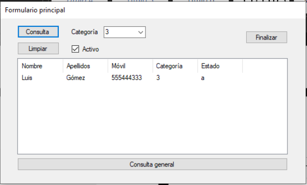
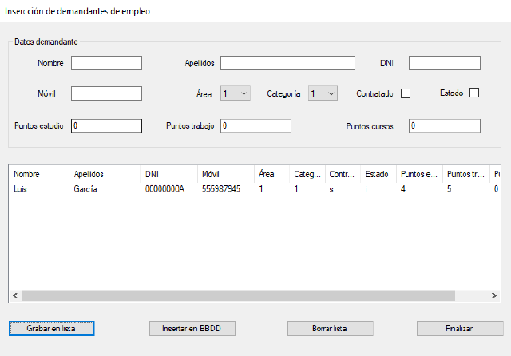
06
Java · C# · Visual StudioDAM
Diseño y Desarrollo de Interfaces
Módulo sobre el diseño de interfaces user friendly. Primero en Java con JFrame, JMenu y JLabel;
después en C# con Visual Studio. Practiqué todo tipo de eventos y consecuencias, y desarrollé por iniciativa
propia una app para gestionar pisos durante mi búsqueda de alquiler, conectada a una base de datos Access.
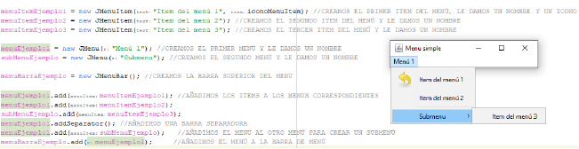
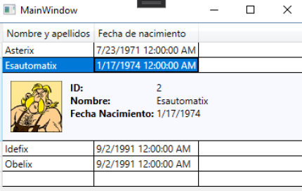
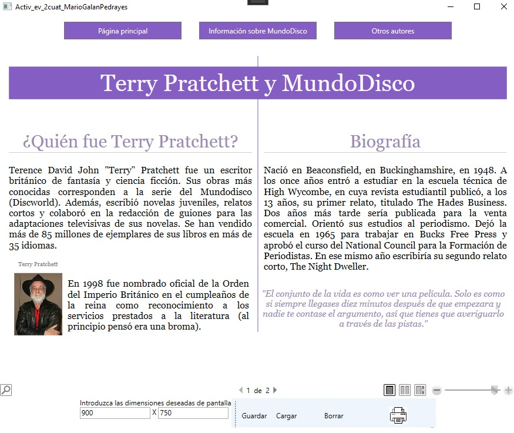
07
Odoo · Dynamics 365DAM
Sistemas de Gestión Empresarial
Módulo centrado en ERPs. Desarrollamos en Odoo una lista de tareas con filtros y gestión CRUD,
y en Microsoft Dynamics 365 Business Central una aplicación para gestionar mascotas con sus datos
en una vista de lista integrada en el ERP.
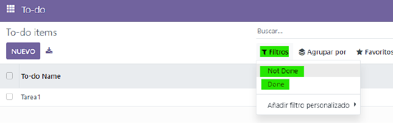
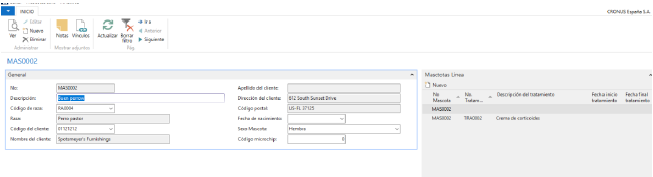
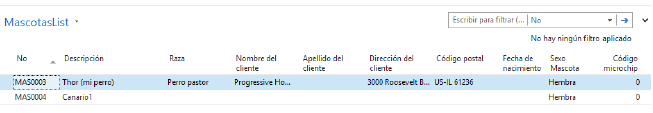
08
Java · Sockets · TCP/IPDAM
Programación de Servicios y Procesos
Módulo centrado en la lógica de procesos concurrentes y servicios en red. Trabajamos con semáforos
(problema productor-consumidor), monitores (sincronización de hilos de alto nivel) y conexiones TCP/IP
mediante Sockets, llegando a implementar un chat síncrono con modelo Cliente/Servidor multicapa.
Al ser programación de consola no existen capturas de interfaz, pero el código fuente está disponible
y el módulo fue de los más exigentes a nivel lógico del ciclo.
Documentación
Apuntes de desarrollo
Todas las aplicaciones del ciclo DAM cuentan con apuntes extensamente detallados,
desde los pasos más básicos (cómo crear un botón) hasta aplicaciones completas.
Los apuntes del ciclo de Laboratorio superan los 600 folios escritos a mano.